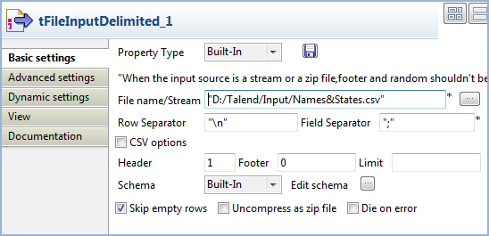

|
Component family |
Data Quality | |
|
Function |
Carries out a Search and Replace operation in the input columns defined based on an external lookup. | |
|
Purpose |
Helps to cleanse all files before further processing. | |
|
Basic settings |
Schema and Edit schema |
A schema is a row description, i.e., it defines the number of fields that will be processed and passed on to the next component. The schema is either built-in or remote in the Repository. If you are using Talend Open Studio for Big Data, only the Built-in mode is available. Two read-only columns, Value and Match are added to the output schema automatically. WarningThe data Type defined in the schemas must be consistent, ie., an integer can only be replaced by another integer using an integer as a look up field. Values of one type cannot be replaced by values of another type. |
|
|
|
Built-in: The schema will be created and stored locally for this component only. Related topic: see Talend Open Studio User Guide. |
|
|
|
Repository: The schema already exists and is stored in the Repository, hence can be reused in various projects and job designs. Related topic: see Talend Open Studio User Guide. |
|
|
Lookup search column |
Select the column to be searched in the lookup schema. |
|
|
Lookup replacement column |
Select the column where the replacement values are stored. |
|
|
Column options |
Select the columns of the main flow where the replacement is to be carried out. |
|
Advanced settings |
tStatCatcher Statistics |
Select this check box to collect log data at the component level. |
|
Usage |
tReplaceList is an intermediary component. It requires an input flow and an output component. | |
Note
If you are using Talend Open Studio for Big Data, only the Built-in mode is available for the property and schema.
The following Job searches and replaces a list of states with their corresponding two-letter codes. The relevant codes are taken from a reference file placed as lookup flow in the Job.

Drop the following components from the Palette onto the design workspace: two tFileInputDelimited components, a tReplaceList and a tLogRow.
Connect the two tFileInputDelimited components to the tReplaceList component using Row > Main connections. Note that the link between the reference input component (the second tFileInputDelimited) and the tReplaceList component appears as a lookup row.
Connect the tReplaceList component to the tLogRow component using a Row > Main connection.
Double-click the first tFileInputDelimited component to open its Basic settings view and set the parameters of the main input flow, including the path and name of the file to read and the number of header rows to skip.
In this example, the main input file provides a list of people names and US state names. The following shows an extract of the file content:
name;state Andrew Kennedy;Mississippi Benjamin Carter;Louisiana Benjamin Monroe;West Virginia Bill Harrison;Tennessee Calvin Grant;Virginia Chester Harrison;Rhode Island Chester Hoover;Kansas Chester Kennedy;Maryland Chester Polk;Indiana Dwight Nixon;Nevada Dwight Roosevelt;Mississippi Franklin Grant;Nebraska
Click the [...] button next to Edit schema to open the [Schema] dialog box and set the input schema.
According to the structure of the main input file, the input schema should contain two columns: name and state.

When done, click OK to close the dialog box and propagate the changes to the next component.
Define the properties of the second tFileInputDelimited component similarly.

In this example, the reference input file provides a list of states and their two-letter codes. Accordingly, the reference input schema should have two columns: state and code.
Double-click the tReplaceList component to open its Basic settings view to set the operation to carry out.

From the Lookup search column list, select the column to be searched. In this use case, we want to carry out a search on the state column.
From the Lookup replacement column list, select the column containing the replacement values, code for the two-letter state codes in this example.
In the Column options table, select Replace check box for the states column, to replace the state names with their corresponding codes.
In the tLogRow component, select the Table check box for a better readability of the output.